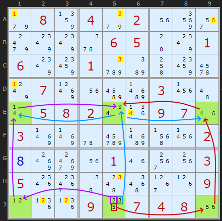
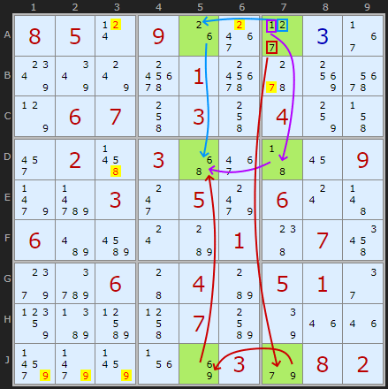
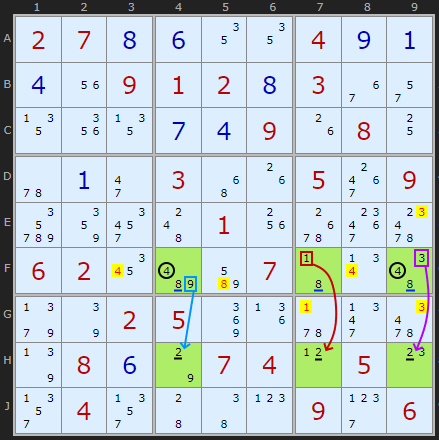

Regretfully this has been in my inbox for three years but I'm glad I don't throw things away lightly. Nils Leder from Germany wrote to me with a novel pattern I think is worth including in the solver. He's doing some sophisticated puzzle variant stuff on logic-masters.de and you can see more of his work here.
This pattern is not terribly common but that might mean my implementation of the idea is too tightly coded and I'm not finding other valid instances - or my understanding of the pattern isn't sufficiently broad. I was getting more hits at one point but also false positives which we don't want.

Original example by Nils Leder
: Load Example
or : From the Start The pattern is six cells arranged in a 3 by 2 or 2 by 3 formation. Being in different boxes does not appear to matter. So this isn't like some other patterns (eg Unique Rectangles). The pattern requires there are six candidates found in those six cells but because not all cells can see all other cells in the formation we can't assume all six must appear once in those cells. That would be too easy.
In Nils' example E1, E5, E9, J1, J5 and J9 have two candidates taken from a set {1,2,3,4,5,6} except for J5 which has three {2,3,5}. There are no two candidates N which are not paired, ie could be a link. As Nils writes:
"The interesting thing is that the cells always are forced to contain each of the numbers 1 to 6. One could describe them as intertwined XY-Cycles since, if the option 5 is removed from J5, the cells E1, E5, J1 and J5 form an XY-cycle on the numbers {1,2,3,4}. And if, on the other hand, the option 2 is removed from J5, then the cells E5, E9, J5 and J9 form an XY-cycle on {3,4,5,6}."
"So there definitely exists an XY-cycle although one cannot tell if it’s on the left or on the right side in rows E and J. But as the digit 4 appears in both potential XY-cycles, one XY-cycle will also ‘activate’ the other one."
I'd also add because all candidates of the same value can see each other there will never be two of N in these cells and five in total candidates. That (and the Twinned XY-Cycles) make this is a giant Naked set. We can eliminate off-chain in the direction of all pairs of numbers.
In finding similar patterns I'm drawn to looking first for a triple of bi-value cells in one row or column. Checking of one candidate is in all three cells (as 4 is in E1, E5 and E9). Then looking for another row with 2 and 3 candidate cells to make 6. I'm not specifically looking for strong links and if they were all strong (bi-location) there would be no eliminations.
Example 2

Example 2
: Load Example
or : From the Start Lets look at another example, this time found in Ruud's top 50k test list. The inclusion of this strategy knocks the puzzle down from an extreme (659) to a diabolical (223).
Orientated in the column we have 6 as the common candidate in cells A5, D5 and J5. These look onto cells A7 with {1,2,7}, D7 and J7. The two XY-Chains must be traced from row A which is the shared row, unlike the first example where the triple was in the middle.
Example 3

Example 3
: Load Example
or : From the Start
And to finish lets consider a pattern which does not follow the single triple cell examples looked at so far. This shows that the solver is looking a bit wider than the original example but I still think there is room for improvement.
The critical aspect that makes this work that all of the candidates of the same value are still visible to each other. That means we can work with three 4s, three 8s and three 2s as they are sticking to their respective rows. The other numbers 1, 3 and 9 are paired in their columns. The XY-Chain is more of an analogy now as the necessity of a candidate in one place removes two in two other cells, which is not typical of XY-Chains.
Please ensure your comment is relevant to this article. Email addresses are never displayed, but they are required to confirm your comments.
When you enter your name and email address, you'll be sent a link to confirm your comment.
Line breaks and paragraphs are automatically converted - no need
to use <p> or <br> tags.
Hello Andrew, Thanks for all your work on Sudoku's. Your sentence "I'd also add because all candidates of the same value can see each other there will never be two of N in these cells" in the description for this strategy made me wonder if this could be used as an extended locked set. So instead of looking for 6 cells in a 3 by 2 or 2 by 3 formation, I just search for any group of 6 cells that have 6 candidates and where all candidates of the same value can see each other. I have tried this with thousands of puzzles, also with 4, 5 and 7 cells in a group and that gave a lot of hits and never a false positive. Such a group of cells is not bound to a single row, column or square. E.q. in the example https://www.sudokuwiki.org/sudoku.htm?bd=S9B36083m1v1o033g090t048m01078k0h201w143a02au1v8q1708370v4z1n4y03050b0i1n07091i1k0d010g201w08052n2g0i08060w0t0x6tab045f360z2s0384602e5y4i2m090130063b05ae023i0r2i087u the cells D123 together with EFH2 form a group of 6 with candidates 134678 and every candidate can see all other candidates with the same value. Because of this the following eliminations are possible: 3 from B2, 6 from E3 and 7 from H2. Using this mechanism my solver also finds the Twinned XY Chain that is meant in the example.
So I now am working with 'naked quads' that are not bound to row, column or square and that has a consequence, 'naked quints', 'naked sextets' and so on are now also possible. My next step will be to extend my ALSs (extend with N cells with N+1 candidates that all can see each other, not bound to row, column or square).
Up till now, everything works as I hoped and I did not find any false positives. Would you be so kind to share your thoughts about what I am doing.
Kind regards, Jan Bouwman
Andrew Stuart writes:
I am sure your are onto something there. I am glad that this specific example is found using Almost Locked Sets. Turn off everything else to see.
Add to this Thread
... by: strmckr
Monday 9-Jun-2025
ALS 2 degrees of freedom { distributed disjointed subset} not new by a long shot this is from 2005 - 2007 on the forums
this theory is actually where Sue de Coqs and Death-blooms : classify
as APE, ATE, AQE ...{etc} depreciated and evolved into ALS rules over counting iterative arguments of the aforementioned methods from 2005 and earlier.
this is a 5 Sector Disjointed Subset found under
ALS 2 DOF exclusion rule { which makes this a RING} 1) (12789) r1c479 a) (2689) @ r149c5
x : (1,a : 2,8,9)
since a & 1 have +1 > D.O.F worth of unique R.C.C, 1 & A are locked sets with 2 of the RCC in A or 1
{ specifically any als cannot have more then +1 worth of RCC > DOF else both sets have less then N values for the sets.}
thus all non RCC of 1 is restricted to 1 {1,7}, all non RCC of A are restricted to A. each RCC of 1&A are restricted to 1&a,
for advanced ALS elimination rules see:
http://forum.enjoysudoku.com/viewtopic.php?t=2510
for advanced DDS: http://forum.enjoysudoku.com/viewtopic.php?t=5423
ie the forums much older version that uses sets which has searchable aspects of set compared to blind iteration of Psi ring {S.E.T} . MSLS has 3 versions pure naked, pure hidden, combination of naked and hidden set as a balance equation specifically all of which are 1:1 translatable to NxN+K fish.
Multi-Sector Locked Sets. I'm sure there are precedents and earlier patterns. And alternative terminology. Will keep delving
Add to this Thread
... by: Tim
Thursday 22-May-2025
Hello,
I have had success with the Twinned XY-Chains if the 6 cells are in at least 3 boxes. I saw from some of the puzzles I plugged into your solver, you find Twinned XY-Chains in 3 box patterns. Have you limited your solver to 3+ box patterns? In example 3, if you start from the step before the Twinned XY-Chains is found, and delete the 8 from F4 before continuing, you do not eliminate the 8s in BOX 6, in E7 and E9. It looks like you can extend Twinned XY-Chains to boxes as long as all occurrences of the candidate are in that box. Since you do not appear to have done this, do you have evidence that box eliminations are not valid?
Thanks for all your work on your solver. It has helped me a lot.
Tim
Andrew Stuart writes:
Excellent question. So I wanted to really check this before replying and I think I’ve done enough of that now. Yes you can eliminate in the box if the link with N is in the same box and there are exactly 2 of N in that row or column to align with. However I only found one case in Ruud’s 50,000 set. Not that there are many Twinned XY-Cycles to start with (like 7 I think). So it’s a bunch of code for a small gain but not costly so I’ve kept it. You can view the example here
Comments
Email addresses are never displayed, but they are required to confirm your comments. When you enter your name and email address, you'll be sent a link to confirm your comment. Line breaks and paragraphs are automatically converted - no need to use <p> or <br> tags.
... by: Jan Bouwman
Thanks for all your work on Sudoku's.
Your sentence "I'd also add because all candidates of the same value can see each other there will never be two of N in these cells" in the description for this strategy made me wonder if this could be used as an extended locked set.
So instead of looking for 6 cells in a 3 by 2 or 2 by 3 formation, I just search for any group of 6 cells that have 6 candidates and where all candidates of the same value can see each other.
I have tried this with thousands of puzzles, also with 4, 5 and 7 cells in a group and that gave a lot of hits and never a false positive.
Such a group of cells is not bound to a single row, column or square.
E.q. in the example https://www.sudokuwiki.org/sudoku.htm?bd=S9B36083m1v1o033g090t048m01078k0h201w143a02au1v8q1708370v4z1n4y03050b0i1n07091i1k0d010g201w08052n2g0i08060w0t0x6tab045f360z2s0384602e5y4i2m090130063b05ae023i0r2i087u
the cells D123 together with EFH2 form a group of 6 with candidates 134678 and every candidate can see all other candidates with the same value.
Because of this the following eliminations are possible: 3 from B2, 6 from E3 and 7 from H2.
Using this mechanism my solver also finds the Twinned XY Chain that is meant in the example.
So I now am working with 'naked quads' that are not bound to row, column or square and that has a consequence, 'naked quints', 'naked sextets' and so on are now also possible.
My next step will be to extend my ALSs (extend with N cells with N+1 candidates that all can see each other, not bound to row, column or square).
Up till now, everything works as I hoped and I did not find any false positives.
Would you be so kind to share your thoughts about what I am doing.
Kind regards, Jan Bouwman
... by: strmckr
not new by a long shot this is from 2005 - 2007 on the forums
this theory is actually where Sue de Coqs and Death-blooms : classify
as APE, ATE, AQE ...{etc} depreciated and evolved into ALS rules over counting iterative arguments of the aforementioned methods from 2005 and earlier.
this is a 5 Sector Disjointed Subset found under
ALS 2 DOF exclusion rule { which makes this a RING}
1) (12789) r1c479
a) (2689) @ r149c5
x : (1,a : 2,8,9)
since a & 1 have +1 > D.O.F worth of unique R.C.C, 1 & A are locked sets with 2 of the RCC in A or 1
{ specifically any als cannot have more then +1 worth of RCC > DOF else both sets have less then N values for the sets.}
thus
all non RCC of 1 is restricted to 1 {1,7}, all non RCC of A are restricted to A.
each RCC of 1&A are restricted to 1&a,
for advanced ALS elimination rules see:
http://forum.enjoysudoku.com/viewtopic.php?t=2510
for advanced DDS:
http://forum.enjoysudoku.com/viewtopic.php?t=5423
+------------+--------------+---------------+
| -2 -2 -2 | -2 (26) -2 | (127) -2 -2 |
| . . . | . -6 . | -17 . . |
| . . . | . -6 . | -17 . . |
+------------+--------------+---------------+
| -8 -8 -8 | -8 (68) -8 | (18) -8 -8 |
| . . . | . -6 . | -17 . . |
| . . . | . -6 . | -17 . . |
+------------+--------------+---------------+
| . . . | . -6 . | -17 . . |
| . . . | . -6 . | -17 . . |
| -9 -9 -9 | -9 (69) -9 | (79) -9 -9 |
+------------+--------------+---------------+
ps this is also found via NAKED m.s.l.s
ie the forums much older version that uses sets which has searchable aspects of set compared to blind iteration of Psi ring {S.E.T} . MSLS has 3 versions pure naked, pure hidden, combination of naked and hidden set as a balance equation specifically all of which are 1:1 translatable to NxN+K fish.
... by: Billa
9 Eliminations: r14c1<>1, r9c23<>2, r138c5<>3, r5c6<>4, r1c9<>6
This is a simple example of an MSLS, nothing new.
I'm sure there are precedents and earlier patterns. And alternative terminology.
Will keep delving
... by: Tim
I have had success with the Twinned XY-Chains if the 6 cells are in at least 3 boxes. I saw from some of the puzzles I plugged into your solver, you find Twinned XY-Chains in 3 box patterns. Have you limited your solver to 3+ box patterns? In example 3, if you start from the step before the Twinned XY-Chains is found, and delete the 8 from F4 before continuing, you do not eliminate the 8s in BOX 6, in E7 and E9. It looks like you can extend Twinned XY-Chains to boxes as long as all occurrences of the candidate are in that box. Since you do not appear to have done this, do you have evidence that box eliminations are not valid?
Thanks for all your work on your solver.
It has helped me a lot.
Tim
So I wanted to really check this before replying and I think I’ve done enough of that now.
Yes you can eliminate in the box if the link with N is in the same box and there are exactly 2 of N in that row or column to align with. However I only found one case in Ruud’s 50,000 set. Not that there are many Twinned XY-Cycles to start with (like 7 I think). So it’s a bunch of code for a small gain but not costly so I’ve kept it. You can view the example here